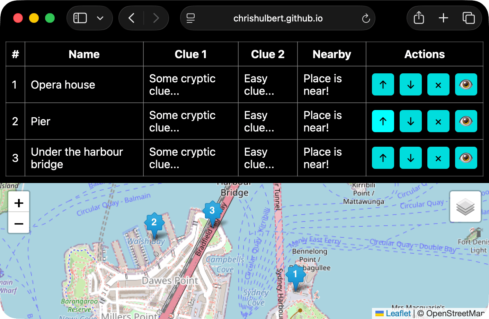
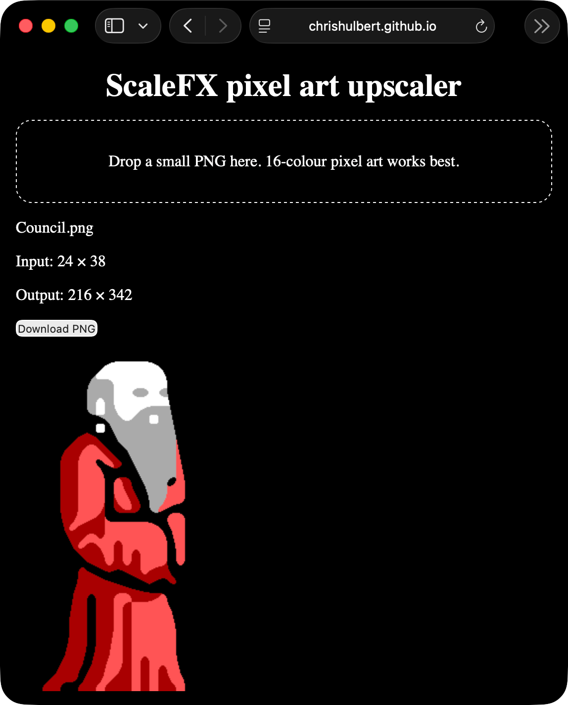
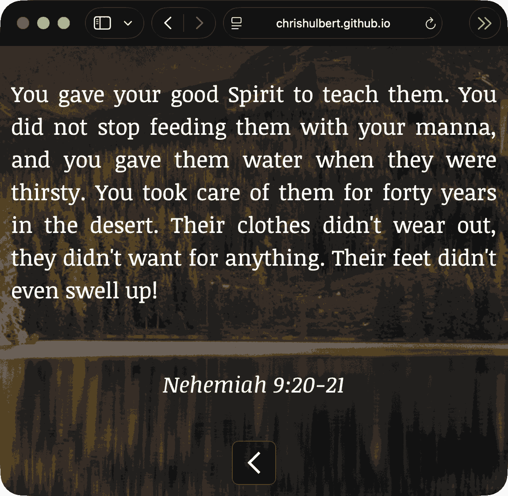
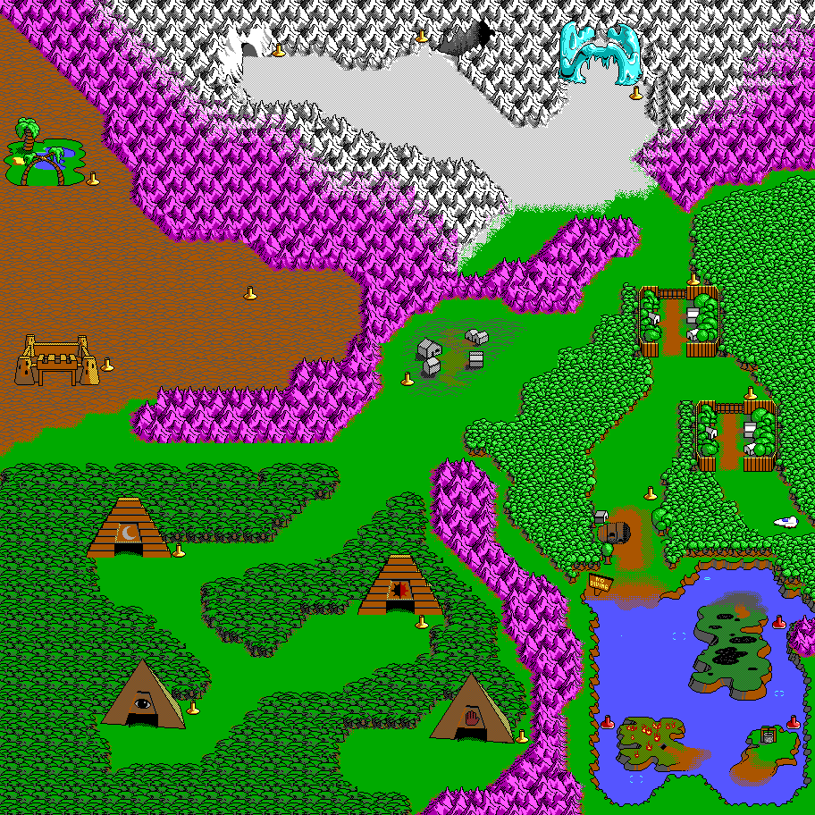
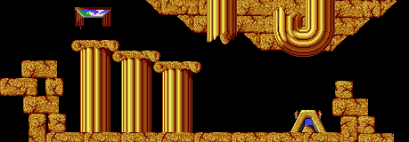
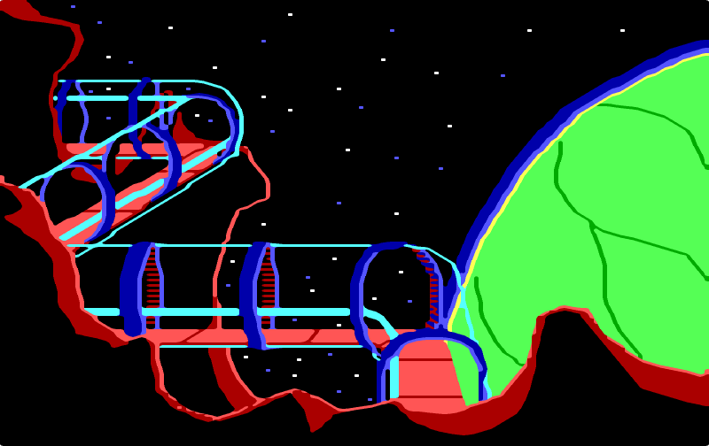
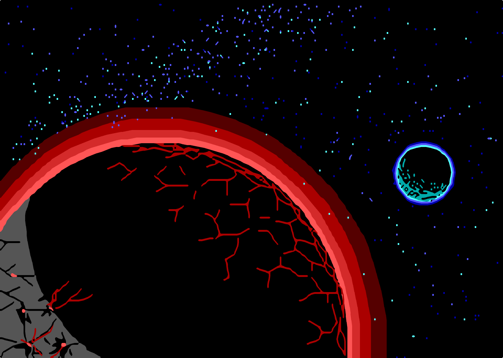
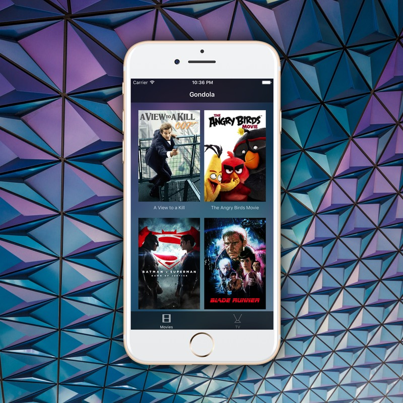
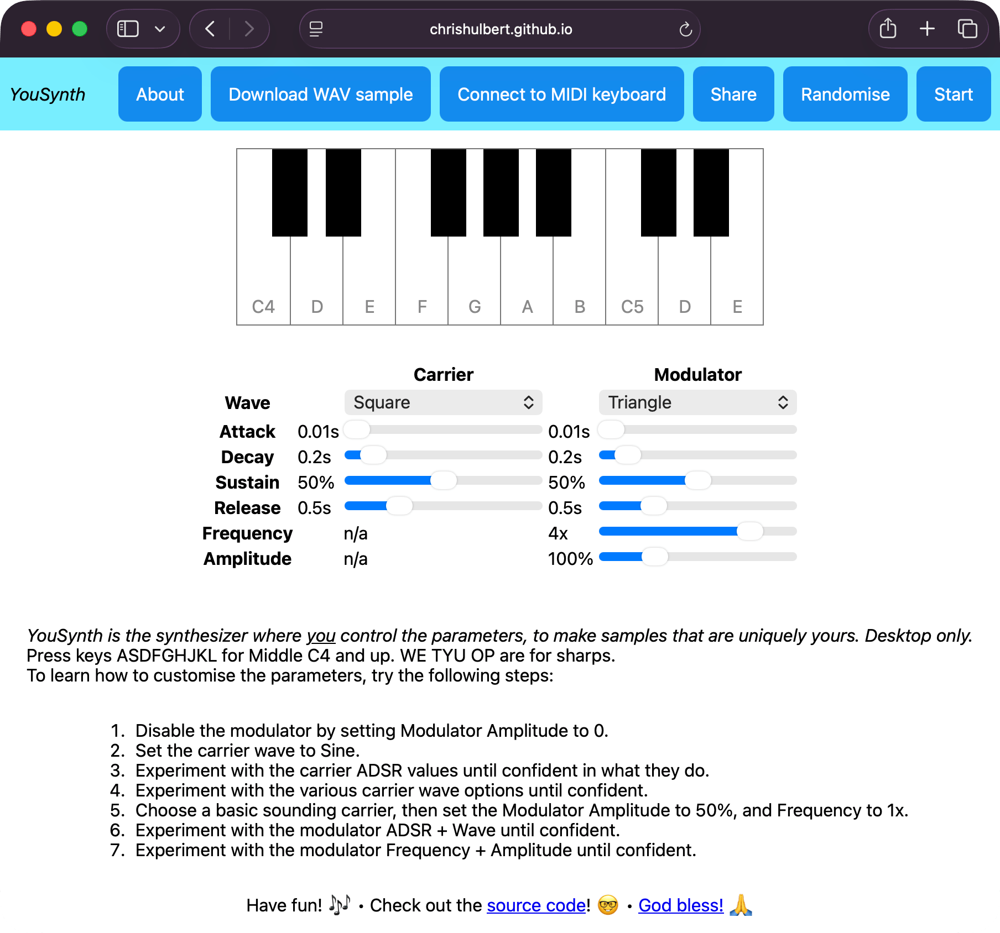
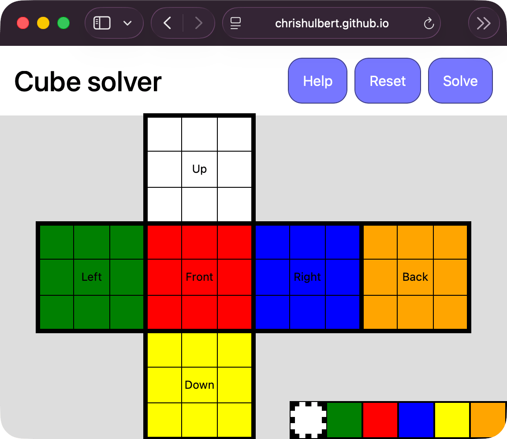

Welcome to my eclectic collection of widgets!

Rally is a tool for building real-life rallies (aka scavenger hunt) for eg church youth groups, or really anyone who wants to have a bit of fun with friends!
An organiser uses the 'builder' tool to set the points and places and hints, generating a link for the rally for everyone to follow, presenting hints as people arrive at each location in order.

ScaleFX is one of the best pixel-art upscaling algorithms. I've ported it to Rust and Javascript. With the Javascript widget, you can drag in a PNG and it will upscale it 9x.

Divine Bible is a collection of topical Bible verses, a different one shown each day, along with nature photography background imagery:

Dopefish Decoder is a Rust program to decode the assets from Commander Keen 4-6, extracting maps and sprites:

Digger Decoder is a Rust program to decode the assets from Lemmings, extracting maps, sprites, and animations:

AGI Quest Decoder is a Rust program to decode the assets from 1980's Sierra games such as Space Quest 2, extracting imagery and animations:

SCI Quest Decoder is a Rust program to decode the assets from late 1980's Sierra games such as Space Quest 3, extracting imagery and animations:
Speedo is a simple GPS speedometer, which can be used to verify the accuracy of your car's instruments:

Gondola is a TV and movies media centre, with apps for Apple TV, iPhone, iPad, and web. Gondola has an emphasis on minimal system requirements on the server, as assets are pre-transcoded to HLS so serving and seeking are simple.
Gondola server iPhone client AppleTV client Bookmarking service

YouSynth is a simple Javascript polyphonic FM synth keyboard. You can customise parameters to make your own sounds, connect it to a MIDI keyboard, and export sounds.

Cube Solver is a simple web UI for solving Rubik's cubes using the min2phase algorithm.